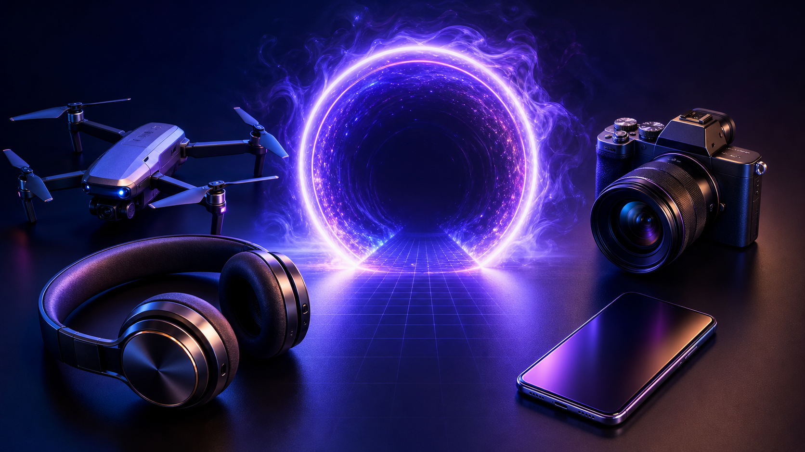

TECHNOLOGIA + FILM + AI
Witaj w swiecie
Tech2u.
Lacze technologie, film i AI, aby tworzyc tresci, ktore inspiruja, edukują i pomagaja dzialac szybciej.

TECH / VIDEO / AI TOOLSTECH2U / 2026
02 TWORCA + DEWELOPER
MATERIAL / RYTM / HISTORIA
Film dla
emocji.
Tempo, kolor i przejscia maja dzialac, zanim padnie pierwsze slowo.


03 / BASSMARKER PRO / FINAL CUT PRO
AI DLA MONTAZYSTOW
BassMarker
Pro.
Wykrywa beaty i automatycznie stawia markery w Final Cut Pro. Ty budujesz historie, program pilnuje rytmu.
Chce BassMarker Pro ↗
01 SOCIAL MEDIA
KANALY TECH2U
Jedna pasja.
Cztery formaty.
Tworze tresci tam, gdzie maja najwiekszy sens. Kazda platforma ma swoj charakter, a ja wykorzystuje to w 100%.

▶